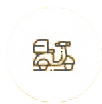
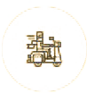

Scoot elimina la molestia de la movilidad urbana. Nuestras motocicletas están ubicadas en lugares convenientes en cada una de nuestras ciudades. Use nuestra aplicación para localizar la motocicleta más cercana, desbloquéela con un toque y ¡ya está!
Uilice la aplicación para encontrar el scotter más real para usted.
Continuamente colocamos scooters en las áreas con mayor demanda, por lo que uno nunca debe estar demasiado lejos
Mostramos la información más importante para los patinetes más cercanos a ti. Así sabrá cuánta carga les queda y podrá ver aproximadamente cuánto costará.
Escanee el código QR y la motocicleta se desbloqueará. Retire el candado del cable, póngase un casco y listo! Siempre asegure las motocicledas lejos de pasillos y rampas de accesibilidad
La aplicación Scoot está disponible con telemetría de conducción. Esto significa que puede mostrarle su velocidad promedio, cuánto tiempo ha estado usando el scooter, la distancia recorrida y muchas más cosas, todo en una aplicación fácil de usar.
Scoot está disponible en 4 ciudades importantes hasta ahora. Nos estamos expandiendo rápidamente, así que asegúrese de informarnos si desea vernos en su ciudad natal. Nuestro objetivo es que nuestros scooters se suelten en 23 ciudades durante el próximo año.
Nuestros pagos son tan fáciles como uno, dos, tres. Aceptamos la mayoría de tarjetas de crédito y débito. También puede vincular su cuenta de PayPal dentro de la aplicación. ¿Necesitas pagar más tarde? ¡No te preocupes! Puede aplazar el pago hasta un mes